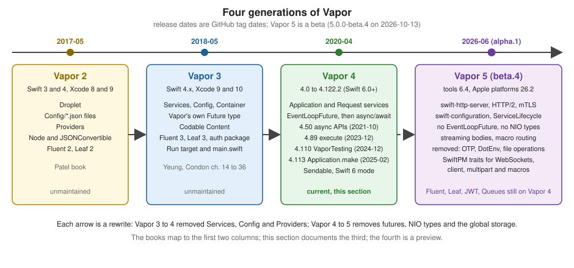

What’s New, Upgrading and Vapor 5
|
This content was generated with the assistance of AI and should be verified against the official documentation before being relied on in production. |
This page was written on 2026-10-17 against Vapor 4.122.2 (tagged 2026-09-17, the latest 4.x release) on Swift 6.4, and
against Vapor 5.0.0-beta.4 (tagged 2026-10-13), which is a beta and not generally available. Both were compiled and run
in scratch packages (Vapor 4.122.2 with swift-tools-version:6.3 in the Swift 6 language mode, Vapor 5.0.0-beta.4 with
tools 6.4 on macOS 27), and the curl output and compiler diagnostics shown are from those runs. Every Vapor 5
statement below was read from the 5.0.0-beta.4 tag, its release notes and its Package.swift, because the official
Vapor 5 documentation at https://docs.vapor.codes/5.0/ was still a single page that says more documentation is coming.
Treat everything about Vapor 5 as subject to change before 5.0.0.
The page has three jobs:
-
Show how the framework changed, so that you can read and upgrade code, blog posts and books written for Vapor 2, 3 and early 4.
-
Describe Vapor 5 as it is in the beta, and give advice that keeps a Vapor 4 code base cheap to move.
-
Collect, in one place, every statement of the three consulted books that is outdated or unsafe, and every place where the current official documentation or a library differed from what was found when this section’s pages were verified.
The other pages of this section already say, in their own closing section, where the books are outdated for their topic. This page is the index: the tables below are organised by area and by book chapter, and link to the page that has the current form.
Where Vapor stands
| Line | Tags | Toolchain of its era | Status on 2026-10-17 |
|---|---|---|---|
Vapor 2 |
|
Swift 3 and 4, Xcode 8 and 9 |
Unmaintained. Documented at the archived 2.0 version of the docs site. The Patel book is written for it. |
Vapor 3 |
|
Swift 4.1 and 4.2, Xcode 9 and 10 |
Unmaintained. Documented at the archived 3.0 version of the docs site. The Yeung book and the later chapters of the Kodeco book are written for it. |
Vapor 4 |
|
Swift 5.2, Xcode 11.4 and macOS 10.15 for the first releases |
Current. 4.122.2 needs Swift 6.0 or newer ( |
Vapor 5 |
No stable tag. |
Swift 6.4 ( |
Beta, and a major rewrite. Not for production, and not yet supported by most of the ecosystem (see Ecosystem readiness). |
The dates are those of the GitHub releases of vapor/vapor. The Vapor blog announced the plan for Vapor 5 with a first alpha in mind for the release of Swift 6 in 2024; the first alpha appeared on 2026-06-11, which is a reminder not to plan a project around a Vapor 5 date. Every example in this section targets Vapor 4.122.x.

Upgrading from Vapor 2 and Vapor 3 to Vapor 4
Vapor 4 is a rewrite, not a rename. The official guide Upgrading to 4.0 covers
Vapor 3 to 4.0 only, and it is itself frozen at Swift 5.2 and Xcode 11.4: its main.swift example still uses the
Application(env) initializer that 4.113 deprecated, it chains EventLoopFuture values with flatMapThrowing, and it
predates async/await. Use it for the mapping of concepts, and apply the current forms from the tables below. The
current documentation has no Vapor 2 to 3 guide; the Vapor 2 entries below describe what the Patel book teaches.
Upgrade in the order of the tables: the project and the process first (nothing else compiles until they are right), then services and configuration, routing and requests, concurrency, Fluent, Leaf and authentication, and the tests last.
The project and the process
| Area | Vapor 2 and 3 (the books) | Vapor 4.122.2 (this section) |
|---|---|---|
Targets and layout |
V3: |
One executable target |
Entrypoint |
V3: |
|
Toolchain |
Swift 4 or 5.x, Xcode 9 to 11, Ubuntu 14.04 to 18.04, the Vapor APT repository, |
Swift 6.x through Swiftly, Xcode or a Docker image. Toolbox 20 only creates projects ( |
Dependencies |
V3: |
Authentication, SwiftCrypto, multipart and URL-encoded forms are part of |
The entrypoint that replaces all of the first three rows. It is the template’s entrypoint.swift without the
commented-out executor takeover, and configure and routes are the two functions of the next listings:
import Logging
import Vapor
@main
enum Entrypoint {
static func main() async throws {
var env = try Environment.detect()
try LoggingSystem.bootstrap(from: &env)
let app = try await Application.make(env)
do {
try await configure(app)
try await app.execute()
} catch {
app.logger.report(error: error)
try? await app.asyncShutdown()
throw error
}
try await app.asyncShutdown()
}
}Source: vapor/template: entrypoint.swift
The forms that the books and early Vapor 4 projects use still compile in 4.122.2, but they are deprecated. A scratch
target containing the official upgrade guide’s main.swift:
import Vapor
var env = try Environment.detect()
let app = Application(env)
defer { app.shutdown() }
try app.run()Source: Vapor docs: Upgrading to 4.0
Built with swift build, that target produced this diagnostic and no other:
Sources/Legacy/main.swift:5:11: warning: 'init(_:_:)' is deprecated: Migrate to using the async APIs. Use use Application.make(_:_:) instead
The synchronous shutdown() is marked noasync since 4.99.0, so it is flagged inside an async function but not in
top-level code like the listing. Vapor 3’s app(env) function, the Run target and main.swift have no counterpart
that compiles.
Services, configuration and providers
| Area | Vapor 2 and 3 (the books) | Vapor 4.122.2 (this section) |
|---|---|---|
Configuration function |
V3: |
|
Services and providers |
V3: |
Services are properties and methods of |
Server settings |
V3: |
|
Middleware |
V3: |
|
Environment |
V3: |
|
Commands and console |
V3: |
ConsoleKit commands with |
Logging |
V3: |
swift-log, bootstrapped with |
Routing, requests and content
| Area | Vapor 2 and 3 (the books) | Vapor 4.122.2 (this section) |
|---|---|---|
Registering routes |
V3: |
|
Path parameters |
V3: |
|
Request bodies |
V2: |
|
Validation |
V3: a different |
|
Errors |
V2 and V3: |
|
Files and uploads |
V3: |
|
Sessions and caching |
V3: |
|
HTTP client |
V3: |
|
Concurrency: from futures to async/await
Vapor 3 had its own Future<T> type with map(to:) labels and global flatMap helpers. Vapor 4.0 dropped it and
exposed SwiftNIO’s EventLoopFuture directly (map, flatMap, flatMapThrowing, and, makePromise(of:)). Vapor
4.50.0 (2021-10-26) added async/await APIs, and since then the recommended handler is an async throws function
that returns its value.
| Era | What to expect in code and in books |
|---|---|
Vapor 3 |
|
Vapor 4.0 to 4.49 |
|
Vapor 4.50 and later |
|
Vapor 4.99 to 4.122 |
|
Vapor 5 beta |
No |
The legacy operators, the bridges and the Swift 6 rules are on Swift
concurrency in Vapor. The future-returning handler of a book still compiles in 4.122.2, which is why a half-upgraded
project can build and still be wrong about Sendable.
Fluent, migrations, Leaf and authentication
| Area | Vapor 2 and 3 (the books) | Vapor 4.122.2 (this section) |
|---|---|---|
Models |
V2: |
|
Relations |
V3: computed |
|
Migrations |
V3: |
A separate |
Database configuration |
V3: |
|
Queries and raw SQL |
V3: |
|
Leaf |
Leaf 2 and 3: |
Leaf 4: |
Authentication |
V2: |
Built in: |
OAuth and email |
Imperial 0.7 (Vapor 3); the Vapor 3 SendGrid provider. |
Imperial 2.x; |
Repositories deserve a note, because the pattern is in the official upgrade guide and in the books. In Vapor 3 a
repository was a final class registered as a ServiceType. In Vapor 4 it is a protocol, a struct that takes the
database, a factory stored in app.storage and an accessor on Request; with async/await the protocol methods are
async throws. Services, Storage and Dependency
Injection builds it step by step.
Testing
| Era | Tool | Shape |
|---|---|---|
Vapor 2 and 3 |
XCTest with |
Futures and explicit event-loop handling. |
Vapor 4.0 to 4.109 |
XCTVapor, |
Synchronous test method; |
Vapor 4.110 and later |
VaporTesting with Swift Testing ( |
|
The test below compiles and passes against 4.122.2. It is the whole test of the books route used in this page’s
scratch package:
import Testing
import VaporTesting
@testable import App
@Suite struct AppTests {
@Test func listBooks() async throws {
try await withApp(configure: configure) { app in
try await app.testing().test(.GET, "books") { res async throws in
#expect(res.status == .ok)
let books = try res.content.decode([BookDTO].self)
#expect(books.first?.title == "Swift for Servers")
}
}
}
}Source: Vapor docs: Testing and vapor/vapor release 4.110.0
XCTVapor still works, with one change from the books' examples. Calling the synchronous app.test(...) from an
async test method is a compile error in 4.122.2
(instance method 'test' is unavailable from asynchronous contexts; Use the async method instead), so the XCTest form
is try await app.test(.GET, "books/7") { res async in ... }. Vapor 5’s VaporTesting has new APIs again (see
below). Testing covers the details.
The 4.x handlers and the controller the tests exercise are below. The list and show handlers are the current form;
legacyList is the EventLoopFuture shape of the books, which still compiles in 4.122.2 and is shown only so that you
can recognise it.
import Vapor
struct BookDTO: Content {
var id: Int
var title: String
}
struct BookController: RouteCollection {
func boot(routes: any RoutesBuilder) throws {
let books = routes.grouped("books")
books.get(use: list)
books.get(":bookID", use: show)
books.get("legacy", use: legacyList)
}
@Sendable
func list(req: Request) async throws -> [BookDTO] {
[BookDTO(id: 1, title: "Swift for Servers")]
}
@Sendable
func show(req: Request) async throws -> BookDTO {
let id = try req.parameters.require("bookID", as: Int.self)
return BookDTO(id: id, title: "Book \(id)")
}
// Legacy shape: still compiles in 4.122.2, returns an EventLoopFuture.
@Sendable
func legacyList(req: Request) -> EventLoopFuture<[BookDTO]> {
req.eventLoop.makeSucceededFuture([BookDTO(id: 1, title: "Swift for Servers")])
}
}
func routes(_ app: Application) throws {
app.get("hello") { _ async in "Hello, Vapor 4" }
try app.register(collection: BookController())
}Source: Vapor docs: Controllers
Running it (swift run App serve -p 8088) and calling it with curl:
$ curl -s localhost:8088/hello
Hello, Vapor 4
$ curl -s localhost:8088/books/legacy
[{"id":1,"title":"Swift for Servers"}]Notable 4.x releases
The table lists the releases that changed how an application is written, with the dates and the change as stated in the
GitHub release notes. The full history is in the release list; exact release
numbers for several earlier changes (for example the first Sendable conformances) are in the blog post Upcoming
Sendable changes rather than in one release.
| Release | Date | Change for application code |
|---|---|---|
4.0.0 |
2020-04-09 |
The rewrite: services on |
4.50.0 |
2021-10-26 |
|
4.89.0 |
2023-12-06 |
Fully async entrypoints: use |
4.99.0 |
2024-05-10 |
|
4.100.0 |
2024-05-15 |
Async |
4.110.0 |
2024-12-21 |
The |
4.113.0 |
2025-02-10 |
|
4.116.0 |
2025-09-09 |
|
4.121.0 |
2026-01-05 |
|
4.122.0 |
2026-07-01 |
|
4.122.1 |
2026-08-25 |
Fix for multiple response-stream callbacks. |
4.122.2 |
2026-09-17 |
Sends |
Swift 6 adoption in Vapor 4 happened in steps rather than in one release: a large Sendable annotation effort in 2023
(using locks inside Application and Request), async streaming bodies for requests and responses, and by 2026 a
package that builds with strict concurrency and no warnings in the Swift 6 language mode. The template of the 4.121 line
enables the upcoming features ExistentialAny, InternalImportsByDefault, MemberImportVisibility,
InferIsolatedConformances and ImmutableWeakCaptures. Two practical consequences for code copied from older material:
route closures and handler methods should be @Sendable when the enclosing type could gain non-Sendable state, and a
value stored under a StorageKey must be Sendable.
4.122.2 behaviour that differs from the documentation
Verifying this section against the source of 4.122.2 and the libraries it resolves turned up statements in the official documentation that no longer match the code, and a few defects. They are collected here with the page that proves each one. A row is a statement about the checked version, not a documented guarantee: re-test when you upgrade.
| Topic | What the documentation (or an older article) says | What 4.122.2 and its libraries do | Page |
|---|---|---|---|
Request decompression |
The server configuration page says the default is |
The initializer in the source defaults to |
|
Idle timeout |
Not documented. |
|
|
Session cookie name |
The sessions page says the default cookie is |
The source sets |
|
|
Older documentation lists a |
|
|
Shutdown order |
Not documented. |
Lifecycle handlers shut down before the HTTP server unless in-flight work is drained first. |
|
Environment and entrypoint |
The environment page shows |
That initializer is deprecated; |
|
Installation and project docs |
The installation page quotes Swift 5.9 as the minimum; the folder-structure page shows XCTest and |
Vapor 4.122 needs Swift 6.0; the template tests use Swift Testing with |
Installation and toolchain and Project structure and SwiftPM |
|
The comment on the protocol shows |
The real requirement is |
|
Passwords |
The page does not say what happens with a malformed digest. |
|
|
JWT |
The page shows |
In jwt-kit 5.7.1 the EdDSA initializer throws, and the first key added is also the default when it has a |
|
Leaf |
The page says |
Leaf 4.5.2 is the current release, and the cache is disabled for the |
|
WebSockets |
The page shows the |
Both still work in 4.122; the |
|
Fluent |
|
The |
|
Raw SQL fragments |
Older articles and the Vapor docs use |
|
|
MongoDB |
The vendor driver |
MongoDB’s Swift driver and |
|
Queues |
Not documented. |
|
Queues and scheduled jobs |
APNs |
The Vapor page shows |
|
|
OpenAPI |
The |
swift-openapi-runtime 1.13.1 collects JSON bodies without a limit and |
|
Email packages |
Not documented by Vapor. |
The Smtp package of Sending Email (3.1.2) is not under |
|
The site’s |
|
It never does: |
Vapor 5 beta.4
Vapor 5 is a major overhaul of Vapor’s internals. The summary below is what the 5.0.0-beta.4 tag contains; it was
compiled and run, but the APIs are explicitly not frozen. The release notes from the alphas to beta.4 are the best
change log there is.
What each beta added
| Release | Date | Highlights from the GitHub release notes |
|---|---|---|
5.0.0-alpha.1 |
2026-06-11 |
First alpha, announced at WWDC. Built on a new HTTP server from Swift, removal of seven years of technical debt, full structured concurrency, type-safe routing with macros for parameters and authentication, and a controller macro. |
5.0.0-alpha.2 |
2026-08-11 |
HTTP server pinned and updated, TLS wired to the server, |
5.0.0-beta.1 |
2026-09-15 |
HTTP/2 on the server, request and response bodies streamed through the server handler, |
5.0.0-beta.2 |
2026-09-16 |
Fixes SwiftPM refusing to resolve the dependency graph (uses a tagged HTTP server). |
5.0.0-beta.3 |
2026-10-01 |
OTP removed, support for Crypto 5, DotEnv removed, application factories for the file middleware, an HTTP server update, Swift Format, initial benchmarks. |
5.0.0-beta.4 |
2026-10-13 |
Middleware macros. |
The package
The manifest of 5.0.0-beta.4 uses swift-tools-version:6.4 and the 26.2 platform minimum for macOS, iOS, tvOS and
watchOS, so it cannot be built on an older Xcode or on an Apple platform below that (the Linux requirement is the Swift
6.4 toolchain). It defines SwiftPM traits, all four enabled by default, and three library products (Vapor,
VaporTesting and VaporMacros).
| Trait | What it controls |
|---|---|
|
WebSocket support. In the beta the |
|
The |
|
Multipart support, on |
|
The |
The main dependencies are swift-http-server (.upToNextMinor(from: "0.3.0")), swift-configuration 1.x with the
CommandLineArguments trait, swift-service-lifecycle from 2.6.3, swift-http-types from 1.7.0, swift-crypto from
4.0.0 up to 6.0.0, swift-nio from 2.101.3, swift-nio-ssl, swift-nio-extras, swift-certificates, swift-syntax
602, the tracing, metrics and logging APIs, console-kit 5.0.0-beta and routing-kit 5.0.0-beta.
What changes for application code
Everything in the "Vapor 5 beta.4" column was read from the sources of the tag. "Removed" means that the file or the
public API is not in the tree of 5.0.0-beta.4; it may come back in another form.
| Area | Vapor 4.122.2 | Vapor 5.0.0-beta.4 |
|---|---|---|
Server |
Vapor’s own NIO pipeline, |
|
Application |
|
|
Services |
Extensions on |
The view renderer, cache, responder, server, client and session driver are chosen once, through |
Configuration |
|
|
Request and response |
|
|
Bodies |
Collected by default ( |
Streaming by default: |
Content |
|
|
Middleware |
|
|
Routing |
|
The same, plus macro routing with the |
Authentication |
|
Async-only protocols without the prefix; |
Passwords, OTP and crypto |
|
The |
Files |
|
Removed in 5.0.0-beta.1 (pull request 3553): |
Cache, sessions, views |
|
|
HTTP client |
|
One requirement, |
Commands, logging, tracing |
ConsoleKit 4 |
ConsoleKit 5 (beta), the |
Testing |
|
New |
A Vapor 5 application
The scratch package below builds against 5.0.0-beta.4 with no warnings. The entrypoint is the shape of the
repository’s own Development target (it has no Environment.detect() or Application.make), the controller uses the
@Controller macro, and the plain route reads the request body as a stream.
Package.swift:
// swift-tools-version:6.4
import PackageDescription
let package = Package(
name: "bookshelf-v5",
platforms: [.macOS("26.2")],
dependencies: [
.package(url: "https://github.com/vapor/vapor.git", exact: "5.0.0-beta.4"),
.package(url: "https://github.com/apple/swift-configuration.git", from: "1.0.0", traits: ["CommandLineArguments"]),
],
targets: [
.executableTarget(
name: "App",
dependencies: [
.product(name: "Vapor", package: "vapor"),
.product(name: "VaporMacros", package: "vapor"),
.product(name: "Configuration", package: "swift-configuration"),
]
)
]
)entrypoint.swift:
import Configuration
import ConsoleLogger
import Logging
import Vapor
@main
struct Entrypoint {
static func main() async throws {
let config = ConfigReader(providers: [
CommandLineArgumentsProvider(),
EnvironmentVariablesProvider(),
])
ConsoleLogger.bootstrapWithConfigReader(config: config)
let logger = Logger(label: "codes.vapor.bookshelf")
try await withLogger(logger) { _ in
let app = try Application(configReader: config)
do {
try await configure(app)
try await app.run()
try await app.shutdown()
} catch {
try? await app.shutdown()
throw error
}
}
}
}configure.swift:
import Vapor
func configure(_ app: Application) async throws {
app.serverConfiguration.address = .hostname("127.0.0.1", port: 8089)
try await routes(app)
}routes.swift:
import HTTPTypes
import Vapor
import VaporMacros
struct BookDTO: Content {
var id: Int
var title: String
}
@Controller
struct BookController {
@GET("books")
func list(req: Request) async throws -> [BookDTO] {
[BookDTO(id: 1, title: "Swift for Servers")]
}
@GET("books", Int.self)
func show(req: Request, bookID: Int) async throws -> BookDTO {
BookDTO(id: bookID, title: "Book \(bookID)")
}
}
func routes(_ app: Application) async throws {
app.get("hello") { _ in "Hello, Vapor 5" }
app.on(.post, "echo") { req -> String in
var total = 0
try await req.body.forEachChunk { chunk in
total += chunk.count
}
return "received \(total) bytes"
}
try await app.register(collection: BookController())
}Source: vapor/vapor 5.0.0-beta.4: Sources/Development (the entrypoint, the route registration and the macro controller are adapted from it)
Running it and calling it:
$ swift run App
$ curl -s -i localhost:8089/hello | head -4
HTTP/1.1 200 OK
Content-Type: text/plain; charset=utf-8
Content-Length: 14
$ curl -s localhost:8089/books
[{"title":"Swift for Servers","id":1}]
$ curl -s localhost:8089/books/42
{"id":42,"title":"Book 42"}
$ head -c 100000 /dev/zero | curl -s -X POST --data-binary @- localhost:8089/echo
received 100000 bytesThe @Controller macro generates the RouteCollection conformance and boot(routes:), with one @Sendable
registration per annotated method; a path component given as a type (Int.self) becomes a typed parameter handed to the
function. Expanded for the first method, the macro’s own tests show:
extension UserController: RouteCollection {
func boot(routes: any RoutesBuilder) throws {
routes.get("api", "macros", "users") { req async throws -> Response in
try await self._route_getUsers(req: req)
}
}
}The other macros are @POST, @PUT, @DELETE, @PATCH and @HTTP(method, ...) (and freestanding forms for use
inside function bodies), @AuthMiddleware(User.self, ...) and, new in beta.4, #Middleware(using:) { ... } and
#AuthMiddleware(...) { ... } blocks that wrap the routes declared inside them. The Development target of the tag
has runnable examples that supply the middleware’s dependencies by key path, by factory closure or from a task-local.
Ecosystem readiness
Checked on 2026-10-17 against the default branches and tags of the repositories.
| Package | Latest tag | Vapor 5 status |
|---|---|---|
fluent, fluent-kit |
4.13.0, 1.57.0 |
|
leaf, leaf-kit |
4.5.2, 1.14.3 |
|
jwt, jwt-kit |
5.1.2, 5.7.1 |
|
queues, queues-redis-driver |
1.18.0, 1.1.2 |
|
redis |
4.14.0 |
|
apns |
5.1.0 |
A |
swift-openapi-vapor |
1.2.0 and 2.0.0-beta.1 |
2.0.0-beta.1 depends on Vapor 5.0.0-beta.4. |
console-kit, routing-kit, multipart-kit |
5.0.0-beta.2, 5.0.0-beta.3, 5.0.0-beta.2 |
Betas used by Vapor 5; the 4.x stable lines serve Vapor 4. |
fluent-mongo-driver, Imperial, VaporSecurityHeaders |
1.4.0 (2024-10), 2.2.0, 4.2.0 |
No Vapor 5 release found. |
A Vapor application that needs Fluent, Leaf, JWT, Queues or Redis cannot move to Vapor 5 today, which is the strongest reason to stay on 4.x for anything that has to ship.
Migration advice
Moving within Vapor 4:
-
Move the entrypoint to
Application.make,execute()andasyncShutdown(), and removeApplication(env),run()andshutdown()(4.113 deprecation). -
Convert handlers, middleware, migrations and commands to their
asyncprotocols; keepEventLoopFutureonly inside third-party code, bridged with.get(). -
Turn on the Swift 6 language mode with
swift-tools-version:6.3and fixSendableproblems at the source:@unchecked Sendableon Fluent models,Sendablestorage values,@Sendablehandlers. -
Replace XCTest with
VaporTestingand Swift Testing (4.110), usingwithAppso thatasyncShutdown()always runs. -
Move
.sql(raw:)and\(raw:)tounsafeRaw:and read the other deprecation warnings that a Swift 6.4 build prints.
Preparing for Vapor 5 without waiting for it:
-
Keep the application’s own code behind small protocols: a configuration type (
AppConfig) that is the only reader ofEnvironment, a password hasher, a file store, and repositories over Fluent. These are the parts that Vapor 5 changes or removes. -
Return DTOs, not Fluent models, and keep
Contenttypes independent ofRequest. -
Write streaming code with
asyncbodies (req.body,Response.Body(managedAsyncStream:)) rather than collecting everything. -
Do not depend on
app.storage,app.locks,Environment.get,req.fileio.writeFile,.envfiles or OTP in code you expect to carry over. -
Try the beta in a branch with a throwaway service to learn the new application shape, and re-run it on every beta.
Moving to Vapor 5, once it is released and the packages you use have Vapor 5 releases: read the
official upgrade guide (it covers only Vapor 3 to 4 today) and the release notes of
5.0.0, rewrite the entrypoint and configure around ConfigReader, pass the services in ServiceConfiguration, change
AsyncMiddleware conformances to Middleware, await content decoding and validation, replace NIO types by
swift-http-types and Foundation types, and register routes with the macros if you want type-safe parameters.
Where the books are outdated
All three books are outdated: Patel (2018) is written for Vapor 2, Yeung (2018) for Vapor 3.0 and Swift 4.2, and the Kodeco book of Condon and others is the early-access build whose chapters 1 to 13 use Vapor 4.0 on Swift 5.2 and whose chapters 14 to 36 still show Vapor 3. The books are consulted references for concepts and narrative; no text, code or figure is copied from them, and none of their code compiles against Vapor 4.122 as printed. Their ISBNs, publishers and companion repositories are in the section bibliography.
By area
Each row says what the books teach, with the Vapor or Swift version in which it changed, and where the current form is.
| Area | Outdated in the books | Current form and page |
|---|---|---|
Whole framework |
Patel: Vapor 2 ( |
Vapor 4: |
Concurrency |
|
|
Entrypoint |
|
|
Toolchain |
Swift 4 to 5.2, Xcode 9 to 11, Ubuntu 14.04 to 18.04, the Vapor APT repository, |
Swift 6.x with Swiftly or Docker, Toolbox 20 ( |
SwiftPM |
|
Automatic test discovery, current tools versions, upcoming-feature flags. See Project structure and SwiftPM. |
Fluent |
Fluent 2 and 3 ( |
|
Leaf |
Leaf 2 and 3: |
Leaf 4: |
Authentication |
|
Built-in |
Caching and Redis |
|
|
Files |
|
|
Testing |
|
VaporTesting with Swift Testing ( |
OAuth and email |
Imperial 0.7 (Vapor 3); the vapor-community SendGrid provider. |
Imperial 2.x for Vapor 4; |
Deployment |
Vapor Cloud (shut down in 2020), Heroku’s free tier (ended in November 2022), the heroku-16 stack, |
The official multi-stage |
Clients |
UIKit with storyboards, completion-handler |
SwiftUI, |
Frameworks |
Kitura (IBM ended support in 2019), Perfect (inactive), IBM Cloud |
Hummingbird 2 is the main alternative. Ecosystem and Framework Comparison compares them. |
By book and chapter
The chapter numbers of the Kodeco book follow its early-access build, the one cited in the bibliography; the final edition adds a Sign in with Apple chapter that the early-access build lacks, so its later chapters are numbered one higher.
| Book and chapters | What it teaches | What is outdated or unsafe, and the current form | Page |
|---|---|---|---|
Condon 1 and 3 |
Vapor history and team, SwiftNIO, HTTP basics. |
If the edition predates 4.50, handlers return |
|
Condon 2 |
Toolbox, |
|
|
Condon 4 |
Non-blocking I/O, futures and promises, |
The operators remain accurate but are legacy; new code uses |
|
Condon 5 to 7 |
Models, migrations, |
Futures instead of |
|
Condon 8 to 10 |
|
Future chains; |
|
Condon 11 |
XCTVapor, |
VaporTesting and Swift Testing since 4.110; the synchronous |
|
Condon 12, 13 and 19 |
An iOS client for the API. |
Completion handlers, duplicated models, tokens in |
|
Condon 14 to 17 |
Leaf contexts, tags, base templates, Bootstrap, |
Still Vapor 3 and Leaf 3 in the early-access build: |
|
Condon 18 and 20 |
Password hashing, |
A seeded admin with the password "password"; plaintext tokens that never expire; a logout as a link; the session ID kept across login (rotate it). |
|
Condon 21 |
|
The |
|
Condon 22 and 23 (plus the final edition’s Sign in with Apple chapter) |
OAuth with Imperial, Sign in with Apple. |
Imperial 0.x is future-based and for Vapor 3; |
|
Condon 24 and 25 |
Unique email, password-reset tokens, transactional email; multipart uploads. |
A Vapor 3 SendGrid provider and futures; reset tokens stored in plaintext without expiry; the profile-picture upload takes the user ID from the URL with no ownership check and no size or type validation; whole-file |
|
Condon 26 |
Schema-changing migrations, API versioning, environment-specific seeding. |
|
Migrations, and API design |
Condon 27 |
Caching with memory, database and Redis; cache-aside with an external API through |
Vapor 3 services and futures; check a database-backed cache against Fluent’s no-expiry, no-overwrite behaviour. |
|
Condon 28 |
Custom middleware, shared-secret header, route-group middleware. |
|
|
Condon 29 |
WebSockets, session registries, a live-location client. |
The registry is a plain class shared across event loops (a data race); use an actor. The Vapor 3 server service is gone. |
|
Condon 30 |
Soft delete and restore, timestamps, enums, admin authorization, lifecycle hooks, eager loading, joins, raw SQL. |
Early-access text on Vapor 3 and Swift 4.2; rewrite with |
Transactions, model middleware and soft delete, relations, SQLKit, authorization |
Condon 31 to 34 |
Heroku, Docker and Compose, AWS EC2 and RDS with nginx and systemd, environments, release builds, Supervisor, scaling, Redis sessions. |
Heroku’s free tier ended; |
|
Condon 35 and 36 |
Monolith versus microservices, per-service databases, token validation through a users service, a gateway proxying with |
Tokens in plaintext; service-to-service credentials over plain HTTP; a gateway that copies headers wholesale (use an allow-list); no timeouts. |
HTTP client, and microservices |
Yeung 1 |
Swift on Linux, SwiftNIO |
Kitura and Perfect are no longer developed; Vapor 3’s |
|
Yeung 2 to 4 and appendix A |
Toolbox commands, boilerplate, the old services container, debugging in Xcode, logging levels, testing, coverage, Postman and curl. |
|
|
Yeung 5 to 7 |
|
A mutable array in a controller shared across event loops (a data race); 400 for not found and 200 for create; "HTTP UPDATE"; logout and delete over |
|
Yeung 8 and 9 |
Postgres, SQLite and MySQL, Fluent drivers, session-based admin login with bcrypt, redirect middleware. |
Typos ( |
|
Yeung 10, 11 |
Three-tier architecture, Backends for Frontends, API gateway, REST resource modelling, pagination query parameters. |
Vapor 3 |
|
Yeung 12, 14 |
Cloud deployment (Vapor Cloud), containers, registries, Kubernetes. |
Vapor Cloud no longer exists; IBM Cloud commands are historical. |
|
Yeung 13 |
An iPhone CRUD client over the API, ATS exceptions. |
Global "Allow Arbitrary Loads"; use |
|
Patel 1 |
Swift scripts, SwiftPM library and executable packages, a raw-socket HTTP server, |
A stored property in an extension and non-public package API do not compile; reach for NIO’s |
|
Patel 2, 6 and 11 |
An iOS app evolving from local persistence to an API client, one workspace for app and server, a tvOS target sharing code. |
Vapor 2 and Xcode 9; |
|
Patel 3 and 4 |
Vapor 2 packages, |
None of it exists in Vapor 4. Default |
|
Patel 5 |
REST verbs, nested and wildcard routes, resource controllers, PATCH. |
An unauthenticated |
Routing, and API design |
Patel 7 |
Leaf layouts, content negotiation, custom middleware, AJAX CRUD. |
Leaf 2 syntax; a template name taken from the URL; no CSRF token on the browser interface; no |
|
Patel 8 and 9 |
Environment-specific configuration, response assertions, CI on Linux and macOS, Heroku with a managed database. |
Travis CI (use GitHub Actions); |
Configuration, and testing, deployment |
Patel 10 |
Password and session authentication for the web and bearer tokens for apps on one backend, token issuing behind Basic auth, iOS login. |
SHA-256 shown before bcrypt; plaintext tokens; tokens in |
Errata and bad practices not to reproduce
The books contain code that is wrong or unsafe independently of their age. This section’s pages do not reproduce it, and say the correct form where the topic comes up.
| Category | What the books do | The correct form here |
|---|---|---|
Secrets and credentials |
Hard-coded fallback database credentials such as |
Read secrets from the environment and fail fast in production; create the admin with a command that takes the password from the operator’s environment and hashes it at run time. See Configuration and environment. |
TLS |
|
Keep certificate verification on (turn it off only for a local container, never through a downgraded URL); narrow ATS exceptions in Debug builds; TLS between services you do not run on a trusted network. See Server configuration and HTTP client. |
Tokens and passwords |
Bearer and password-reset tokens stored in plaintext with no expiry (Condon ch. 18, 24, 35; Patel ch. 10); SHA-256 password hashing shown before bcrypt (Patel ch. 10); a |
Store a digest of the token with an expiry; use |
Authorization |
A profile-picture upload taking the user ID from the URL with no ownership check and no size or type validation (Condon ch. 25); an unauthenticated admin API (Yeung ch. 11); an unauthenticated |
Derive the owner from the authenticated user; guard every admin route; compare secrets with |
Web security |
Forms without CSRF protection, or with a token on only one form (Condon ch. 16, 20; Yeung ch. 9; Patel ch. 7); logout and deletes over |
A CSRF token, |
Concurrency |
A mutable in-memory array in a controller shared across event loops (Yeung ch. 5); a global mutable WebSocket registry (Condon ch. 29); |
An actor for shared state; |
HTTP semantics |
400 for not found and 200 for creation (Yeung ch. 5, 11; Patel ch. 5); "HTTP UPDATE" (Yeung ch. 5); N+1 queries in serialisation (Patel ch. 5); no cascade on parent delete (Patel ch. 5). |
404 for a missing record, 201 with |
Operations |
|
A non-root service user, signed repositories, least privilege in CI, and authentication enabled on every database. See Deployment with Docker. |
Typos and broken code |
|
Compiling examples; |
What the books do not cover
None of the three books, and for several topics not even the official 4.0 documentation, covers the following. The pages of this section fill the gap from the sources:
-
Swift 6 strict concurrency and
Sendablein Vapor (Swift Concurrency in Vapor), the asyncApplicationlifecycle,LifecycleHandler,app.storage/StorageKeyandapp.locks(Services, Storage and Dependency Injection). -
Route metadata, case-insensitive routing, body streaming,
ContentConfigurationwith custom coders, content hooks. -
Fluent
@Enum,@Group,@OptionalChild,ModelAlias,chunk, aggregates,paginate,AsyncModelMiddleware, transactions and SQLKit (Fluent Models, Fluent Queries and Pagination, Transactions, Model Middleware & Soft Delete, SQLKit and Raw SQL). -
Leaf 4 custom tags and HTML DSL alternatives (Leaf Custom Tags and HTML DSLs).
-
Redis Pub/Sub and Redis sessions (Redis & Caching, WebSockets, Sessions and Cookies).
-
Queues (jobs, retries, scheduled jobs, event delegates) and commands with
Signature(Queues & Background Jobs, Scheduled Jobs, Commands). -
JWT 5 (JWKS, vendors), Crypto (the SwiftCrypto re-export) and OTP (JSON Web Tokens (JWT), Passwords and Crypto).
-
APNs, tracing with swift-distributed-tracing and swift-otel, metrics (APNs Push Notifications, Tracing, Metrics & OpenTelemetry).
-
OpenAPI with swift-openapi-generator and swift-openapi-vapor (OpenAPI).
-
Server configuration (TLS, HTTP/2, compression, idle timeout; Server Configuration).
-
VaporTesting with Swift Testing (Testing).
-
Fly.io, systemd, nginx and the current Docker template (Deployment Targets, Deployment with Docker).
-
Vapor 5.
Common errors when upgrading
| Symptom | Cause and fix |
|---|---|
|
|
|
The synchronous XCTVapor |
|
There is no |
Warnings about |
Models without |
|
Vapor 5 beta only: registration is |
Package resolution fails for |
The beta needs tools 6.4 and 26.2 Apple platforms, and dependencies that are themselves prereleases; pin |
A Fluent or Leaf package will not resolve next to Vapor 5 |
Those packages still depend on Vapor 4; see Ecosystem readiness. |
References
-
Vapor docs: Upgrading to 4.0 (Vapor 3 to 4.0) and Vapor docs: Release notes
-
vapor/vapor releases, including 5.0.0-beta.4, 5.0.0-beta.3, 5.0.0-beta.1, 5.0.0-alpha.1, 4.122.0 and 4.110.0
-
vapor/vapor 5.0.0-beta.4 (Package.swift, Application.swift, Sources/Development)
-
vapor/vapor pull request 3553: Remove File Operations and pull request 3593: Remove DotEnv
-
Vapor blog: The future of Vapor and Upcoming Sendable changes
-
swift-http-server, swift-configuration, swift-service-lifecycle and swift-http-types
-
vapor/fluent-kit, vapor/leaf-kit, vapor/jwt, vapor/queues and vapor/redis (branches and tags checked on 2026-10-17)
-
Kodeco: Server-Side Swift with Vapor (Condon et al.), Packt: Hands-On Server-Side Web Development with Swift (Yeung) and Packt: Hands-On Full-Stack Development with Swift (Patel)